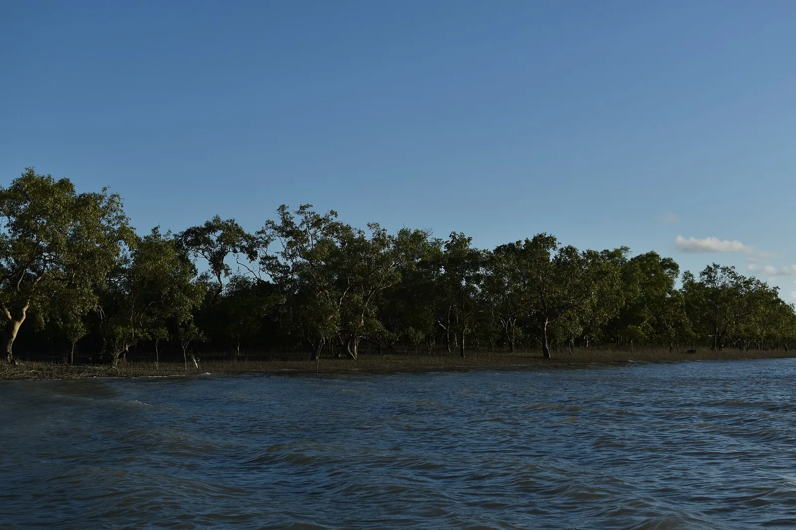
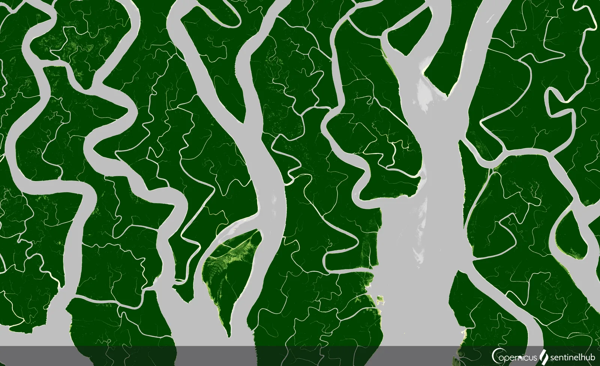

OV8 · Otros vuelos
OV8 · Andere Flüge
OV8 · Other flights
Sundarbans
Información
Los Sundarbans cubren 10.000 kilómetros cuadrados de tierra y agua en el delta del Ganges —más de la mitad en India, el resto en Bangladesh— y contienen el manglar más grande del mundo.
Es uno de los ecosistemas naturales más productivos que existen. En la desembocadura del Ganges y el Brahmaputra, su bosque y sus canales sostienen una fauna enorme, buena parte de ella amenazada.
El manglar alberga la mayor población de tigres del mundo en un solo sitio, adaptados a una vida casi anfibia: nadan distancias largas entre las islas.
Information
Los Sundarbans cubren 10.000 kilómetros cuadrados de tierra y agua en el delta del Ganges —más de la mitad en India, el resto en Bangladesh— y contienen el manglar más grande del mundo.
Es uno de los ecosistemas naturales más productivos que existen. En la desembocadura del Ganges y el Brahmaputra, su bosque y sus canales sostienen una fauna enorme, buena parte de ella amenazada.
El manglar alberga la mayor población de tigres del mundo en un solo sitio, adaptados a una vida casi anfibia: nadan distancias largas entre las islas.
Information
Los Sundarbans cubren 10.000 kilómetros cuadrados de tierra y agua en el delta del Ganges —más de la mitad en India, el resto en Bangladesh— y contienen el manglar más grande del mundo.
Es uno de los ecosistemas naturales más productivos que existen. En la desembocadura del Ganges y el Brahmaputra, su bosque y sus canales sostienen una fauna enorme, buena parte de ella amenazada.
El manglar alberga la mayor población de tigres del mundo en un solo sitio, adaptados a una vida casi anfibia: nadan distancias largas entre las islas.
La UICN evalúa los Sundarbans como de «preocupación significativa». La biodiversidad se mantiene en buena medida intacta, pero las presiones del cambio climático, la degradación del hábitat y la actividad humana crecen.
Preocupan en particular la conservación de las aves y los mamíferos acuáticos, y la degradación de la diversidad vegetal: sobre todo el mangle sundri (Heritiera fomes), la especie que le da nombre al lugar, hoy en peligro a escala global.
La UICN evalúa los Sundarbans como de «preocupación significativa». La biodiversidad se mantiene en buena medida intacta, pero las presiones del cambio climático, la degradación del hábitat y la actividad humana crecen.
Preocupan en particular la conservación de las aves y los mamíferos acuáticos, y la degradación de la diversidad vegetal: sobre todo el mangle sundri (Heritiera fomes), la especie que le da nombre al lugar, hoy en peligro a escala global.
La UICN evalúa los Sundarbans como de «preocupación significativa». La biodiversidad se mantiene en buena medida intacta, pero las presiones del cambio climático, la degradación del hábitat y la actividad humana crecen.
Preocupan en particular la conservación de las aves y los mamíferos acuáticos, y la degradación de la diversidad vegetal: sobre todo el mangle sundri (Heritiera fomes), la especie que le da nombre al lugar, hoy en peligro a escala global.
Fuentes
Quellen
Sources
- UICN, Perspectiva del Patrimonio Mundial (evaluación 2025), Sundarbans National Park — https://worldheritageoutlook.iucn.org/explore-sites/sundarbans-national-park
Galería
Galerie
Gallery



Fuentes
Quellen
Sources
- UNESCO, Centro del Patrimonio Mundial, Sundarbans National Park — https://whc.unesco.org/en/list/452/ consultado 2026-10-06abgerufen 2026-10-06accessed 2026-10-06